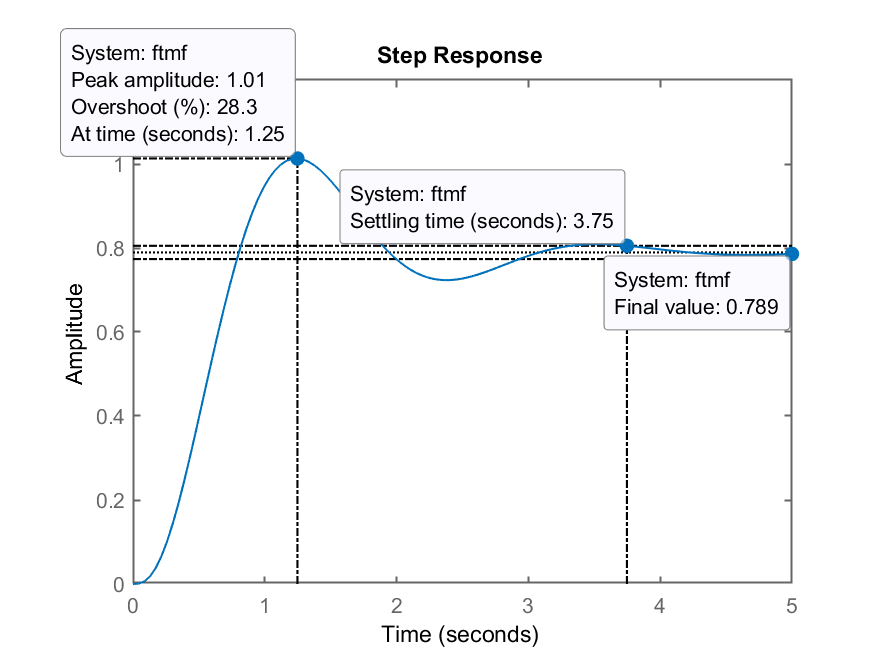
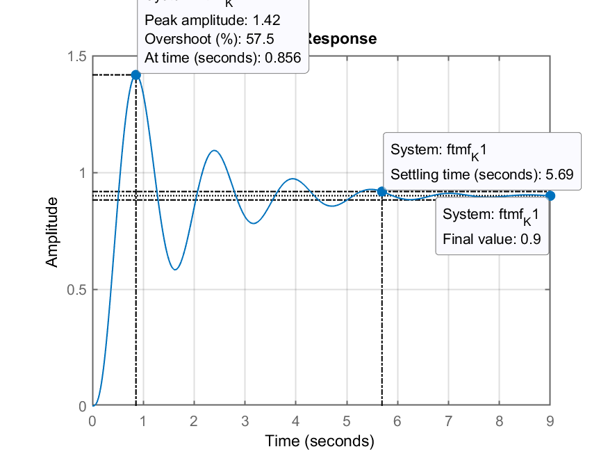

Obs.: Início das aulas associado com projeto de controladores usando ferramente do Lugar Geomátrico das Raízes, ou mais simplesmente, “root locus” — Aula do dia 10/10/2020 (Eng. Computação).
Seja a planta,
No Matlab:
>> G=tf(1, poly( [ -1 -2 10 ] ) )
G =
1
-----------------------
s^3 - 7 s^2 - 28 s - 20
Continuous-time transfer function.
>> % Verificando...
>> zpk(G)
ans =
1
------------------
(s-10) (s+2) (s+1)
Continuous-time zero/pole/gain model.
Ops, nota-se que o pólo que deveria estar em >> G=tf(..):
>> G=tf(1, poly( [ -1 -2 -10 ] ) )
G =
1
------------------------
s^3 + 13 s^2 + 32 s + 20
Continuous-time transfer function.
>> zpk(G)
ans =
1
------------------
(s+10) (s+2) (s+1)
Continuous-time zero/pole/gain model.
Usando Root-Locus, projetar umn controlador Proporcional. Este controlador têm como único requisito de controle, que o overshoot (sobre-sinal) em MF não seja superior à 20%.
Usando-se o Matlab:
>> rlocus(G)
>> % Calculando zeta correspondendo a este %OS
>> OS=20; % 20% de overshoot tolerável
>> zeta=(-log(OS/100))/(sqrt(pi^2+(log(OS/100)^2)))
zeta =
0.45595
>> hold on
>> sgrid(zeta,0);
Gráfico do RL ressaltando alguns valores de ganho:
Adotaremos o ganho de
Verificando o resultado obtido…
>> K=51;
>> ftmf=feedback(K*G, 1);
>> figure; step(ftmf);
Obtemos como resultado:

Notamos erro não nulo em regime permanente:
>> % Calculando o erro em regime permanente
>> dcgain(ftmf)
ans =
0.71831
>> erro=(1-dcgain(ftmf))/1*100
erro =
28.169
Ou seja, acabamos com um erro de regime permanente de
Resposta: Aumentando-se o ganho, o erro vai ser reduzido mas deve aumentar
>> K=75;
>> ftmf=feedback(K*G, 1);
>> figure; step(ftmf);
Resultado obtido com

Nota-se uma pequena redução no erro. Poderia-se ter usado uma valor de ganho maior, deste que ficasse abaixo de
Se fosse usado

Perceba que o valor de Overshoot determinado pelo Matlab e mostrado na figura possui relação com o valor em regime permanente da planta, que, com este ganho atingiu:
>> erro=(1-dcgain(ftmf))/1*100
erro =
16.7
Lembrando da teoria do erro:
Esta planta é um sistema tipo 0 (sem integrador), então:
Suponha que o erro máximo de regume permanente tenha sido especificado em 10%, então
Isolando o
No Matlab:
>> Kp=(1-0.1)/0.1
Kp =
9
Calculando-se agora o:
Por fim, como
Usando o Matlab:
>> K1=Kp*20
K1 =
180
Descobrimos que deveríamos ter adotado
Obs.: foi criada a nova variável K1 para guardar este novo valor de ganho e assim se preservar o valor adotado inicialmente para este controlador (variável K).
Testando o sistema em MF com
>> ftmf_K1=feedback(K1*G,1);
>> figure; step(ftmf_K1);
>> grid
Obtemos a figura:

Nota-se que o erro fica limitado exatamente aos 10%, mas às custas de um overshoot bastante expressivo,
>> OS_calc=(1.42-1)/1*100
OS_calc =
42
Conclusão: com um controlador proporcional, para esta planta, ou se mantêm erro máximo em 10% ou se limita o overshoot aos 20%. Não há como atender simultaneamente estes 2 requisitos de controle (
Para a próxima aula está previsto a inclusão de um controlador com ação integral:
Obs.: Ao encerrar a seção de trabalho no Matlab, não esquecer de fazer:
>> save dados
>> diary off
>> quit
Na próxima aula recuperaremos os dados (variáveis) já criadas nesta aula, usando o comando >> load dados. Uma cópia de dados.mat pode ser obtido [aqui]. O arquivo aula_10102022.md originalmente usado para criar este documento pode ser encontrado compactado com as figuras geradas durante esta aula, aqui: aula_10102022.zip.
\_(ツ)_/